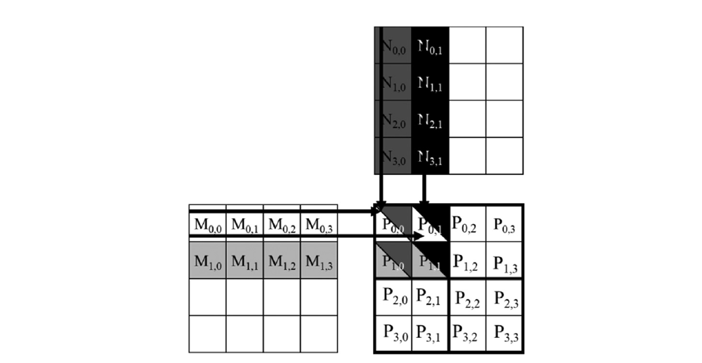
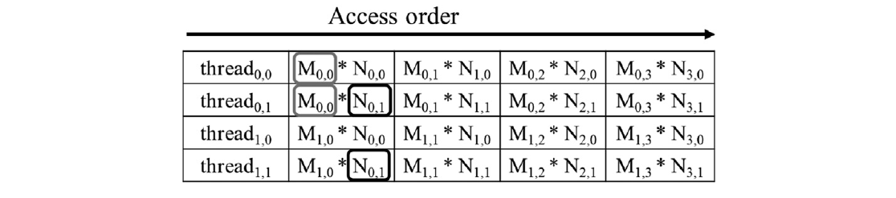
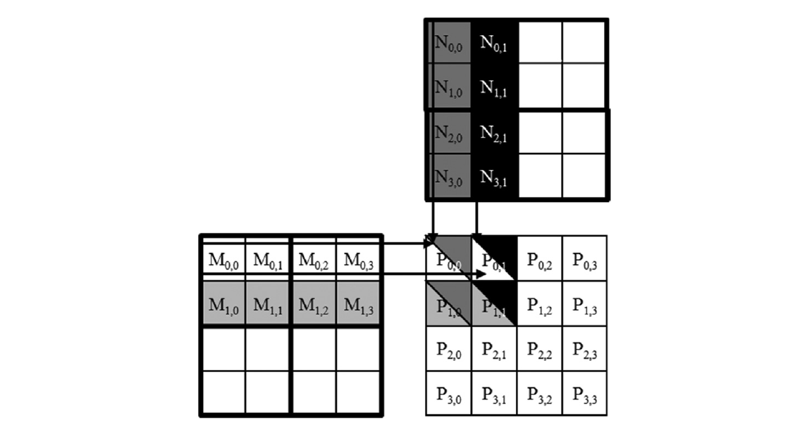

矩阵乘法优化¶
学习目标¶
- 实现分块矩阵乘法内核
- 优化矩阵乘法内核
1. 通过瓦片分块(Tiling)减少内存流量¶

我们之前介绍的矩阵转置算法，由于发生了转置，因此读和写至少有一个会产生非合并内存访问。我们通过使用共享内存，让每一个线程读的和写的位置发生转置，从而实现全局内存的读写都可以是合并内存访问的方式，从而实现加速。共享内存因为是一个块共享的，每个线程把读取的元素写到转置的位置，然后通过同步，等其它线程把它要写的数据完成后，再实现输出。
比如上图的例子，线程(1,0)读取的是7，但是它把写到共享内存(0,1)的位置。而它要写入的是共享内存(1,0)的值，这个值不是由它自己读取的7，而是线程(0,1)读取4。所以需要__syncthreads();，等待所有线程把这个矩阵填满。
使用共享内存除了可以把非合并读写变成合并的读写，在很多应用中还可以减少重复的全局内存读写。
1.1 使用共享内存减少矩阵乘法全局内存访问次数的基本思想¶
在CUDA中使用设备内存存在一个固有的权衡：全局内存容量大但速度慢，而共享内存容量小但速度快。一个常见的策略是将数据分割成称为瓦片(tile)的子集，以便每个瓦片都可以适应共享内存。瓦片一词来源于这样一个类比：一个大墙（即全局内存数据）可以由小瓦片（即每个都可以适应共享内存的子集）覆盖。使用瓦片分块的的条件是：这些瓦片上的核心计算可以相互独立进行。请注意，并非所有数据结构都可以在任意的核函数中分割成瓦片。

瓦片的概念可以通过中的矩阵乘法示例进行说明。上图展示了一个4x4小型矩阵乘法示例。为了简洁起见，我们将M[y*Width+x]、N[y*Width+x]、P[y*Width+x]分别表示为M_{y,x}、N_{y,x}、P_{y,x}。该示例假设我们使用四个2 x 2块来计算P矩阵。P矩阵中的粗框定义了每个块处理的P元素。图中突出显示了\text{block}_{0,0}的四个线程所做的计算。这四个线程计算P_{0,0}、P_{0,1}、P_{1,0}和P_{1,1}。线程0,0和线程0,1在block0,0中的M和N元素访问用黑色箭头标出。例如，线程0,0先读取M0,0和N0,0，然后是M0,1和N1,0，接着是M0,2和N2,0，最后是M0,3和N3,0。下图展示了block0,0中所有线程所做的全局内存访问。线程按垂直方向列出，水平方向的访问时间从左到右增加。请注意，每个线程在执行期间都会访问四个M元素和四个N元素。在突出显示的四个线程中，它们访问的M和N元素有很大的重叠。例如，线程0,0和线程0,1都访问了M0,0以及M的第0行的其余部分。类似地，线程0,1和线程1,1都访问了N0,1以及N的第1列的其余部分。

之前的核函数MatrixMulKernel编写得让线程0,0和线程0,1从全局内存中访问第0行的M元素。如果我们能够让线程0,0和线程0,1协作，使这些M元素仅从全局内存加载一次，我们就可以将对全局内存的总访问次数减半。实际上，我们可以看到在block0,0的执行过程中，每个M和N元素都被访问了两次。因此，如果我们可以让所有四个线程在访问全局内存时进行协作，我们就可以将对全局内存的流量减半。
可以验证在矩阵乘法示例中全局内存流量的潜在减少与所使用的块的维度成正比。对于Width × Width块，全局内存流量的潜在减少量将是Width。也就是说，如果我们使用16 x 16块，通过线程协作，我们可以将全局内存流量潜在地减少到原来的1/16。
1.2 瓦片分块矩阵乘法算法¶
1.2.1 算法思路¶
它的基本思想是在各个线程在对点乘计算中独立使用这些元素之前，共同将M和N元素的子集加载到共享内存中。请注意，共享内存的大小非常有限，当将这些M和N元素加载到共享内存时，必须小心不要超出共享内存的容量。这可以通过将M和N矩阵划分成更小的瓦片来实现。这些瓦片的大小被选择为使其适合共享内存。在最简单的情况下，瓦片的维度等于块的维度，如下图所示：

在上图中，我们将M和N分成了2 x 2的瓦片，由粗线划分。每个线程执行的点乘计算现在被分成了几个阶段。在每个阶段，块中的所有线程都协作将一个M瓦片和一个N瓦片加载到共享内存中。这可以通过让块中的每个线程将一个M元素和一个N元素加载到共享内存中来实现，下图所示。下图中的每一行显示了一个线程的执行活动。请注意，时间从左到右递增。我们只需要显示block0,0中线程的活动；其他块的行为都相同。用于M元素的共享内存数组称为Mds。用于N元素的共享内存数组称为Nds。在第1阶段开始时，block0,0的四个线程协作将一个M瓦片加载到共享内存中：线程0,0将M0,0加载到Mds 0,0中，线程0,1将M0,1加载到Mds 0,1中，线程1,0将M1,0加载到Mds 1,0中，线程1,1将M1,1加载到Mds 1,1中。这些加载操作显示在图中的第二列中。一个N瓦片也以类似的方式加载，显示在的第三列中。
| Tiles loaded by | Block 0,0 | Block 0,1 | Block 1,0 | Block 1,1 |
|---|---|---|---|---|
| Phase 0 (2D index) |
M[0][0],M[0][1], M[1][0], M[1][1] |
M[0][0], M[0][1], M[1][0], M[1][1] |
M[2][0], M[2][1], M[3][0], M[3][1] |
M[2][0], M[2][1], M[3][0], M[3][1] |
| Phase 0 (linearized index) |
M[0], M[1], M[4], M[5] |
M[0], M[1], M[4], M[5] |
M[8], M[9], M[12], M[13] |
M[8], M[9], M[12], M[13] |
| Phase 1 (2D index) |
M[0][2],M[0][3], M[1][2], M[1][3] |
M[0][2],M[0][3], M[1][2], M[1][3] |
M[2][2], M[2][3], M[3][2], M[3][3] |
M[2][2], M[2][3], M[3][2], M[3][3] |
| Phase 1 (linearized index) |
M[2], M[3], M[6], M[7] |
M[2], M[3], M[6], M[7] |
M[10], M[11], M[14], M[15] |
M[10], M[11], M[14], M[15] |
在两个M和N瓦片加载到共享内存后，这些元素被用于点乘的计算。请注意，共享内存中的每个值都被使用了两次。例如，由线程1,1加载到Mds1,1中的M1,1值被线程1,0和线程1,1分别使用了一次。通过将每个全局内存值加载到共享内存中，使其可以被多次使用，我们减少了对全局内存的访问次数。在这种情况下，我们将全局内存的访问次数减少了一半。可以验证，如果瓦片是N x N元素，则减少的访问次数将是N的倍数。
还要注意，每个点乘的计算现在分成了两个阶段，在上图中分别表示为第1阶段和第2阶段。在每个阶段中，每个线程将输入矩阵元素的两对积累到Pvalue变量中。请注意，Pvalue是一个自动变量，因此为每个线程生成了一个私有版本。我们添加了下标只是为了说明这是为每个线程创建的不同实例的Pvalue变量。第1阶段的计算显示在图中的第四列中，第2阶段显示在第七列中。通常，如果输入矩阵的维度是Width，瓦片大小是TILE_WIDTH，则点乘将在Width/TILE_WIDTH个阶段中执行。创建这些阶段对于减少对全局内存的访问至关重要。由于每个阶段都专注于输入矩阵值的一个小子集，线程可以协作加载子集到共享内存，并使用共享内存中的值来满足在该阶段中的重叠输入需求。
还要注意，Mds和Nds在各个阶段之间被重用。在每个阶段中，相同的Mds和Nds被重用来保存用于该阶段的M和N元素的子集。这样一来，一个更小的共享内存就可以为大多数全局内存访问提供服务。这是因为每个阶段都专注于输入矩阵元素的一个小子集。这种专注的访问行为称为局部性。当算法表现出局部性时，就有机会使用小型高速存储器来服务大多数访问，并将这些访问从全局内存中删除。在多核CPU和多线程GPU中，实现高性能的关键在于局部性。
1.2.2 具体例子¶
为了清晰地展示瓦片（Tiling）矩阵乘法的计算与共享内存加载过程，我们构造一个具体的 4 \times 4 矩阵乘法例子：P = M \times N。
在 GPU 中，我们使用大小为 2 \times 2 的线程块（Block 0,0）和 2 \times 2 的瓦片（Tile Width = 2）。此时计算整个 4 \times 4 矩阵点乘需要分为 2 个阶段（Phase 1 和 Phase 2） 完成。
1.2.2.1. 示例数据定义¶
定义矩阵 M 和 N 为 4 \times 4 矩阵，其元素如下：
我们关注负责计算输出矩阵 P 左上角 2 \times 2 区域的 Block(0,0)，包含 4 个线程：
- Thread(0,0) \rightarrow 计算 P_{0,0}，初始
Pvalue= 0 - Thread(0,1) \rightarrow 计算 P_{0,1}，初始
Pvalue= 0 - Thread(1,0) \rightarrow 计算 P_{1,0}，初始
Pvalue= 0 - Thread(1,1) \rightarrow 计算 P_{1,1}，初始
Pvalue= 0
1.2.2.2. 执行过程详解¶
共享内存空间为 2 \times 2 的二维数组：Mds[2][2] 和 Nds[2][2]。
阶段 1 (Phase 1)：处理 M 和 N 的第 1 个 2 \times 2 瓦片¶
步骤 1.1：协作加载全局内存到共享内存
4 个线程并发读取全局内存对应的 M 和 N 左上角 2 \times 2 区域，并写入共享内存：
- Thread(0,0) 读取 M[0][0]=1, N[0][0]=1 \rightarrow 写入
Mds[0][0] = 1,Nds[0][0] = 1 - Thread(0,1) 读取 M[0][1]=2, N[0][1]=0 \rightarrow 写入
Mds[0][1] = 2,Nds[0][1] = 0 - Thread(1,0) 读取 M[1][0]=5, N[1][0]=0 \rightarrow 写入
Mds[1][0] = 5,Nds[1][0] = 0 - Thread(1,1) 读取 M[1][1]=6, N[1][1]=1 \rightarrow 写入
Mds[1][1] = 6,Nds[1][1] = 1
(线程同步 __syncthreads()，确保 Mds 和 Nds 全部加载完毕)
此时共享内存的状态：
步骤 1.2：在共享内存中做局部点乘并累加
每个线程从 Mds（取自己所在的行）和 Nds（取自己所在的列）中读取数据做点乘：
- Thread(0,0)：
- Thread(0,1)：
- Thread(1,0)：
- Thread(1,1)：
(线程同步 __syncthreads()，确保所有线程完成计算后才开始覆写共享内存)
阶段 2 (Phase 2)：处理 M 和 N 的第 2 个 2 \times 2 瓦片¶
步骤 2.1：协作加载全局内存到共享内存（重用 Mds 和 Nds）
线程覆盖加载 M 行方向的下一个瓦片（第 0,1 列块）和 N 列方向的下一个瓦片（第 1,0 行块）：
- Thread(0,0) 读取 M[0][2]=3, N[2][0]=1 \rightarrow 写入
Mds[0][0] = 3,Nds[0][0] = 1 - Thread(0,1) 读取 M[0][3]=4, N[2][1]=2 \rightarrow 写入
Mds[0][1] = 4,Nds[0][1] = 2 - Thread(1,0) 读取 M[1][2]=7, N[3][0]=0 \rightarrow 写入
Mds[1][0] = 7,Nds[1][0] = 0 - Thread(1,1) 读取 M[1][3]=8, N[3][1]=1 \rightarrow 写入
Mds[1][1] = 8,Nds[1][1] = 1
(线程同步 __syncthreads())
此时共享内存更新后的状态：
步骤 2.2：在共享内存中做第二阶段点乘并累加
- Thread(0,0)：
- Thread(0,1)：
- Thread(1,0)：
- Thread(1,1)：
1.2.2.3. 计算结果与性能验证¶
通过标准矩阵乘法验证：
- P_{0,0} = (1 \times 1 + 2 \times 0) + (3 \times 1 + 4 \times 0) = 1 + 3 = 4
- P_{0,1} = (1 \times 0 + 2 \times 1) + (3 \times 2 + 4 \times 1) = 2 + 10 = 12
- P_{1,0} = (5 \times 1 + 6 \times 0) + (7 \times 1 + 8 \times 0) = 5 + 7 = 12
- P_{1,1} = (5 \times 0 + 6 \times 1) + (7 \times 2 + 8 \times 1) = 6 + 22 = 28
计算完全匹配。
访存优化对比分析
- 常规算法：计算 P 的 2 \times 2 子块需要对全局内存读取 4 \times 4 \times 2 = 32 次。
- 瓦片分块算法：阶段 1 加载 8 个元素，阶段 2 加载 8 个元素，总计对全局内存读取 16 次。
- 访存次数减少了一半（即 Tile Width = 2 倍），显著提升了数据重用率和访存带宽效率。
1.3 代码实现¶
__global__ void tiledMatrixMulKernel(float *A, float *B, float *C,
int M, int N, int P)
{
__shared__ float ds_M[TILE_WIDTH][TILE_WIDTH];
__shared__ float ds_N[TILE_WIDTH][TILE_WIDTH];
int bx = blockIdx.x, by = blockIdx.y;
int tx = threadIdx.x, ty = threadIdx.y;
int row = by * TILE_WIDTH + ty;
int col = bx * TILE_WIDTH + tx;
float Pvalue = 0;
for (int ph = 0; ph < ceil(N / (float)TILE_WIDTH); ph++)
{
if (row < M && ph * TILE_WIDTH + tx < N)
ds_M[ty][tx] = A[row * N + ph * TILE_WIDTH + tx];
else
ds_M[ty][tx] = 0;
if (col < P && ph * TILE_WIDTH + ty < N)
ds_N[ty][tx] = B[(ph * TILE_WIDTH + ty) * P + col];
else
ds_N[ty][tx] = 0;
__syncthreads();
for (int k = 0; k < TILE_WIDTH; k++)
Pvalue += ds_M[ty][k] * ds_N[k][tx];
__syncthreads();
}
// Store the P element in C
if (row < M && col < P)
C[row * P + col] = Pvalue;
}
1.3.1 🛠️ 第一部分：共享内存与索引初始化¶
__shared__ float ds_M[TILE_WIDTH][TILE_WIDTH];
__shared__ float ds_N[TILE_WIDTH][TILE_WIDTH];
__shared__关键字：在 GPU 的片上高速缓存（Shared Memory）中开辟空间。它的访问速度接近寄存器，比普通的全局内存（Global Memory）快上百倍。- 每个线程块（Thread Block）都会 独占 一份属于自己的
ds_M和ds_N瓷砖块（Tiles），大小为TILE_WIDTH × TILE_WIDTH。
int bx = blockIdx.x, by = blockIdx.y;
int tx = threadIdx.x, ty = threadIdx.y;
int row = by * TILE_WIDTH + ty;
int col = bx * TILE_WIDTH + tx;
tx, ty：当前线程在当前 Block 内部 的相对二维坐标。row, col：当前线程在整个 Grid（即最终输出矩阵 C） 中的绝对全局二维坐标。每个线程唯一负责计算输出矩阵 C[row][col] 的一个元素。
1.3.2 🔄 第二部分：核心分块滑动循环（外层 loop）¶
由于两个大矩阵相乘，单靠一块小小的共享内存装不下整行和整列，因此需要把一整条“行×列”的长向量，切成很多个长度为 TILE_WIDTH 的 小线段，一段一段地算。
for (int ph = 0; ph < ceil(N / (float)TILE_WIDTH); ph++)
ph（Phase/阶段）：代表当前分块窗口正在滑向第几个线段。ceil(N / (float)TILE_WIDTH)：计算总共需要滑动多少个窗口才能覆盖整个内部维度 N。
1.3.3 📥 第三部分：协同加载与边界防御（内核上半部分）¶
在每个阶段开始时，Block 内部的所有线程需要 共同合作，把矩阵 A 和矩阵 B 中当前窗口对应的数据“搬运”到共享内存中。
if (row < M && ph * TILE_WIDTH + tx < N)
ds_M[ty][tx] = A[row * N + ph * TILE_WIDTH + tx];
else
ds_M[ty][tx] = 0;
- A 矩阵搬运：当前线程负责搬运 A 矩阵中自己对应位置的一个浮点数。
row < M：确保行索引没有超出矩阵 A 的纵向边界。ph * TILE_WIDTH + tx < N：确保当前滑动的窗口列索引没有超出矩阵 A 的横向边界（内部维度 N）。- 补零防污染（Padding 0）：如果不满足条件（即越界了），就强行将共享内存对应位置赋为
0。这是为了在后面做累加乘法时，0 * 任何数 = 0，不会对最终的求和结果产生污染。
这里的下标计算再说明一下：
线程(ty, tx)负责读取A的第row行，第一次循环的时候读取A[row, tx]；第二次循环读取[row, tx + TILE_WIDTH]；……。
因此第ph阶段需要从A读取的是A[row, ph * TILE_WIDTH + tx]，因为A的列是N，所以转化为一维的下标就是A[row * N + ph * TILE_WIDTH + tx]。
要检查的条件是行和列在(M, N)范围之内：
if (row < M && ph * TILE_WIDTH + tx < N)
下面是加载B的代码：
if (col < P && ph * TILE_WIDTH + ty < N)
ds_N[ty][tx] = B[(ph * TILE_WIDTH + ty) * P + col];
else
ds_N[ty][tx] = 0;
- B 矩阵搬运：逻辑与上面相同，负责把 B 矩阵对应窗口的数据搬到
ds_N中。同样做了严格的越界检查和补零处理。
下标计算再说明一下：
线程(ty, tx)负责读取B的第col列，第一次读取B[ty, col]；第二次读取[ty + TILE_WIDTH, col]；；……。
因此第ph阶段需要从B读取的是A[ty + ph * TILE_WIDTH, col]，因为B的列是P，所以转化为一维的下标就是B[(ph * TILE_WIDTH + ty) * P + col]。
要检查的条件是行和列在范围(N, P)之内：
if (col < P && ph * TILE_WIDTH + ty < N)
__syncthreads();
- 第一次同步（重要）：这是一个栅栏同步。因为 Block 内有的线程跑得快，有的跑得慢。必须等到 全块所有 256 个（假设 16x16）线程都把自己负责的元素搬完，共享内存的两个小瓷砖
ds_M和ds_N被彻底填满后，才能进入下一步计算。否则跑得快的线程会读到旧的脏数据。
1.3.4 🧮 第四部分：片上乘加计算（内核下半部分）¶
当数据全部安全进入共享内存后，各线程开始在极快的片上缓存中疯狂计算。
for (int k = 0; k < TILE_WIDTH; k++)
Pvalue += ds_M[ty][k] * ds_N[k][tx];
- 这里的
k循环不再涉及任何全局显存，全部是在共享内存ds_M和ds_N之间做点积。 - 由于这块内存离计算核心极近，且被整个 Block 的线程高频复用（每个元素被读了
TILE_WIDTH次），从而把原本昂贵的显存流量压缩到了原来的 \frac{1}{\text{TILE_WIDTH}}。
__syncthreads();
- 第二次同步（同样重要）：当前阶段的乘加计算完成后，在进入下一个
ph循环前，必须再次同步。 - 这是为了防止跑得快的线程“抢跑”进入下一个循环去修改
ds_M和ds_N的值，从而把那些跑得慢、还在算当前阶段乘加的线程的数据给覆盖掉。
1.3.5 💾 第五部分：写回全局内存¶
// Store the P element in C
if (row < M && col < P)
C[row * P + col] = Pvalue;
- 当整个大外层
ph循环结束，意味着长向量的每一段分块都累加完毕，Pvalue里存的就是最终的矩阵乘法结果。 - 最后做一次全局边界检查
row < M && col < P，如果线程在合法的矩阵 C 范围内，就把累加好的结果一次性写入显存全局矩阵 C。如果属于补齐用的虚拟线程，直接退出，什么也不写。
1.4 启动内核时(运行时)指定共享内存的大小¶
在前面的课程里，我们讨论了最大化 SM 上线程的占用率的重要性，以便能够容忍长延迟操作。核心的内存使用在占用率调优中起着重要作用。虽然 CUDA 寄存器和共享内存可以极大地减少对全局内存的访问次数，但必须小心谨慎地控制这些内存的使用量，以保持在 SM 的容量范围内。每个 CUDA 设备都提供有限的资源，这限制了对于给定应用程序，可以同时驻留在 SM 中的线程数量。一般来说，每个线程需要的资源越多，每个 SM 中可以驻留的线程数量就越少。
我们在《计算架构与调度》中看到，寄存器的使用量可能是占用率的一个限制因素。共享内存的使用量也可能限制可以分配给每个 SM 的线程数量。例如，A100 GPU 的每个 SM 最多可以配置为具有 164 KB 的共享内存，并支持每个 SM 的最大线程数为 2048 个。因此，为了使用所有 2048 个线程槽位，一个线程块不应该使用超过平均值为 (164 KB) / (2048 个线程) = 82 B/线程 的共享内存。在分块矩阵乘法示例中，每个块有 TILE_WIDTH² 个线程，并且为 ds_M 使用 TILE_WIDTH² × 4B 的共享内存，为 ds_N 使用 TILE_WIDTH² × 4B 的共享内存。因此，线程块使用的平均共享内存为 (TILE_WIDTH² × 4B + TILE_WIDTH² × 4B) / (TILE_WIDTH² 个线程) = 8 B/线程。因此，分块矩阵乘法核心的占用率不受共享内存的限制。
然而，考虑一个线程块使用 32 KB 共享内存，每个线程块有 256 个线程的核心。在这种情况下，该核心使用的平均共享内存为 (32 KB) / (256 个线程) = 132 B/线程。使用这样的共享内存使用量，核心无法实现完整的占用率。每个 SM 最多可以承载 (164 KB) / (132 B/线程) = 1272 个线程。因此，该核心的最大可达到的占用率将是 (1272 个分配的线程) / (2048 个最大线程) = 62%。
需要注意的是，每个 SM 中共享内存的大小也可能因设备而异。每一代或型号的设备可以具有不同数量的共享内存。通常情况下，希望核心能够根据硬件中可用的共享内存量使用不同的共享内存量。也就是说，我们可能希望主机代码能够动态确定共享内存的大小，并调整核心使用的共享内存量。可以通过调用 cudaGetDeviceProperties 函数来实现这一点。假设变量 &devProp 传递给函数。在这种情况下，字段 devProp.sharedMemPerBlock 给出每个 SM 中可用的共享内存量。程序员然后可以确定每个块应该使用的共享内存量。
但是前面的核函数不支持由主机代码动态调整共享内存使用量。因为它使用的声明将其共享内存使用量硬编码为编译时常量：
#define TILE_WIDTH 32
__shared__ float ds_M[TILE_WIDTH][TILE_WIDTH];
__shared__ float ds_N[TILE_WIDTH][TILE_WIDTH];
也就是说，无论在编译时将 TILE_WIDTH 设置为何值，ds_M 和 ds_N 的大小都被设置为 TILE_WIDTH² 个元素。由于代码包含了 Mds 和 Nds，它们都将拥有 256 个元素。如果我们想要改变 ds_M 和 ds_N 的大小，我们需要改变 TILE_WIDTH 的值并重新编译代码。在不重新编译的情况下，核心不能轻松地在运行时调整其共享内存使用量。
我们可以通过在 CUDA 中使用不同的声明样式来启用这种调整，通过在共享内存声明前添加一个 C extern 关键字并在声明中省略数组的大小。基于这种样式，ds_M 和 ds_N 的声明需要合并为一个动态分配的数组：
extern __shared__ float Mds_Nds[];
由于只有一个合并的数组，我们还需要手动定义数组的 ds_M 部分和 ds_N 部分的起始位置。请注意，合并的数组是一维的。我们需要使用基于垂直和水平索引的线性化索引来访问它。
在运行时，当我们调用核心时，我们可以根据设备查询结果动态配置每个块使用的共享内存量，并将其作为第三个配置参数提供给核心调用。例如，修订后的核心可以使用以下语句启动：
dim3 block_dim(tile_size, tile_size);
dim3 grid_dim((P + block_dim.x - 1) / block_dim.x,
(M + block_dim.y - 1) / block_dim.y);
int tile_elems = tile_size * tile_size;
int tile_bytes = tile_elems * sizeof(float) * 2;
tiledMatrixMulKernel_v2<<<grid_dim, block_dim, tile_bytes>>>(deviceA, deviceB, deviceC, M, N,
P, tile_size, tile_elems);
然后我们需要修改得到tiledMatrixMulKernel_v2，代码如下，原来的代码通过注释保留下来了，可以对比分析它们的差异。
__global__ void tiledMatrixMulKernel_v2(float *A, float *B, float *C,
int M, int N, int P,
int width, int mds_size)
{
// __shared__ float ds_M[TILE_WIDTH][TILE_WIDTH];
// __shared__ float ds_N[TILE_WIDTH][TILE_WIDTH];
extern __shared__ float Mds_Nds[];
float *ds_M = (float *)Mds_Nds;
float *ds_N = ds_M + mds_size;
int bx = blockIdx.x, by = blockIdx.y;
int tx = threadIdx.x, ty = threadIdx.y;
int row = by * width + ty;
int col = bx * width + tx;
float Pvalue = 0;
for (int ph = 0; ph < ceil(N / (float)width); ph++)
{
if (row < M && ph * width + tx < N)
// ds_M[ty][tx] = A[row * N + ph * width + tx];
ds_M[ty * width + tx] = A[row * N + ph * width + tx];
else
// ds_M[ty][tx] = 0;
ds_M[ty * width + tx] = 0;
if (col < P && ph * width + ty < N)
// ds_N[ty][tx] = B[(ph * width + ty) * P + col];
ds_N[ty * width + tx] = B[(ph * width + ty) * P + col];
else
// ds_N[ty][tx] = 0;
ds_N[ty * width + tx] = 0;
__syncthreads();
for (int k = 0; k < width; k++)
// Pvalue += ds_M[ty][k] * ds_N[k][tx];
Pvalue += ds_M[ty * width + k] * ds_N[k * width + tx];
__syncthreads();
}
if (row < M && col < P)
C[row * P + col] = Pvalue;
}
1.5 实验对比¶
我们可以直接运行：
./mm
它们默认随机生成一个2000 x 1000的A矩阵和一个1000 x 3000的B矩阵，然后做乘法。
另外我们把矩阵弄大一点：
./mm 5000 4000 3000
下面是实验结果。
1.5.1 📊 表格一：小矩阵性能对比 (M=2000, N=1000, P=3000)¶
单位：毫秒 (ms)
| GPU 型号 / 架构代际 | Vanilla 耗时 | Tiled v1 耗时 | Tiled v2 (动态) 耗时 | Tiled 相对朴素版加速比 |
|---|---|---|---|---|
| 老 GPU | 72.4802 | 37.6863 | 40.8003 | 1.92x |
| Tesla T4 (Turing) | 26.8765 | 24.6692 | 25.5858 | 1.09x |
| Tesla V100 (Volta) | 8.7193 | 4.5937 | 4.8599 | 1.90x |
| NVIDIA A100 (Ampere) | 8.2777 | 6.6867 | 6.8669 | 1.24x |
| RTX 4090 Laptop (Ada Lovelace) | 7.5139 | 6.6857 | 6.8693 | 1.12x |
1.5.2 📊 表格二：大矩阵性能对比 (M=5000, N=4000, P=3000)¶
单位：毫秒 (ms)
| GPU 型号 / 架构代际 | Vanilla 耗时 | Tiled v1 耗时 | Tiled v2 (动态) 耗时 | Tiled 相对朴素版加速比 |
|---|---|---|---|---|
| 老 GPU | 810.2580 | 365.2110 | 394.5090 | 2.22x 🚀 |
| Tesla T4 (Turing) | 224.4670 | 179.3650 | 182.9270 | 1.25x |
| Tesla V100 (Volta) | 55.2002 | 37.7467 | 39.9657 | 1.46x |
| NVIDIA A100 (Ampere) | 42.3832 | 30.5777 | 32.0061 | 1.39x |
| RTX 4090 Laptop (Ada Lovelace) | 56.8625 | 65.1159 | 66.6696 | 0.87x (反转) ⚠️ |
1.5.4 🔍 数据洞察与现象解释¶
1.5.4.1. 老 GPU 的“续命神器”¶
在老 GPU 上，大矩阵下 Tiled 跑出了 2.22 倍 的巨幅加速。这是因为老卡的全局显存带宽（Memory Bandwidth）极低，且底层没有高智能的硬件 L1 缓存广播机制。此时手写 Shared Memory 能极大地解放显存带宽，效果最为立竿见影。
1.5.4.2. 为什么 RTX 4090 Laptop 在大矩阵下翻车了？（0.87x）¶
这是一个非常经典的现象。RTX 4090 Laptop 采用的是最新的 Ada Lovelace 架构：
- 恐怖的二级缓存（L2 Cache）：消费级 Ada 架构（包括 4090）最核心的改进就是将 L2 缓存直接暴增到了数十兆字节（MB 级），而老卡和企业级卡更注重全局带宽或显存容量。
- 原因：在大矩阵乘法时，Vanilla 版本的重复访存请求全部被 4090 巨大的硬件 L2 缓存 物理拦截并无开销命中 了。而 Tiled 版本由于引入了
__syncthreads()的高频强行同步（木桶效应），反而拖累了底层发射器的指令流水线，导致手写优化打不过硬件的“乱拳打死老师傅”。
1.5.4.3. v1 与 v2 的微小差距¶
在所有 GPU 上，tiledMatrixMulKernel (v1 静态共享内存) 普遍比 v2 (动态共享内存) 快了 2% ~ 5%。这是由于静态内存在编译期就确定了指针步长，编译器能做更激进的循环展开（Loop Unrolling）和地址计算优化，而动态片上内存在运行时需要多算几步指针偏移。